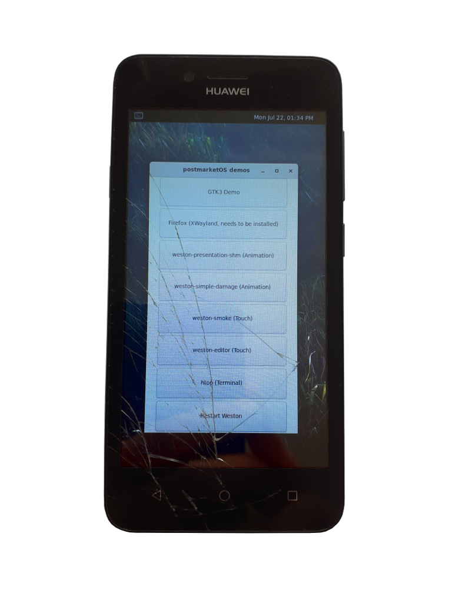

Huawei Y3 II 3G (huawei-lua-u22)
| This phone used to boot, but it doesn't now. Check related MR pmaports!1592 which deletes device from pmaports for details. If you managed to fix it and make it boot, create a new MR in pmaports. |
| This port is made for 3G version of 2016 phone. Don't flash this port on 4G version or newer iterations of Y3 II |
|
 Huawei Y3 II 3G | |
| Manufacturer | Huawei |
|---|---|
| Name | Y3 II 3G |
| Codename | huawei-lua-u22 |
| Released | 2016 |
| Category | testing |
| Original software | Android 5.1 (Linux 3.10.72) |
| postmarketOS kernel | 3.10.72 |
| Hardware | |
| Chipset | MediaTek MT6582 (M?) |
| CPU | 4x 1.3 GHz Cortex-A7 |
| GPU | Mali-400 MP2 |
| Display | 480x854 |
| Storage | 8 GB |
| Memory | 1 GB |
| Architecture | armv7 |
| Unixbench Whet/Dhry score | 474.7 |
{kind=link}
| USB Networking |
Works
|
|---|---|
| Flashing |
Works
|
| Touchscreen |
Works
|
| Display |
Works
|
| WiFi |
Broken
|
| FDE | |
| Mainline | |
| Battery | |
| 3D Acceleration | |
| Audio |
Broken
|
| Bluetooth |
Broken
|
| Camera |
Broken
|
| GPS |
Broken
|
| Mobile data | |
| SMS | |
| Calls | |
| USB OTG |
Unavailable
|
| NFC | |
| Accelerometer |
Broken
|
|---|---|
| Magnetometer | |
| Ambient Light | |
| Proximity | |
| Hall Effect | |
| Ir TX | |
|---|---|
| TrustZone | |
Contributors
Maintainers
Users owning this device
How to enter flash mode
Run $ sudo adb reboot bootloader on your host machine to get in fastboot mode
How to unlock the bootloader
| Many thanks to Levanech and Sasha1409 from 4PDA for this unlock method |
You will need these tools to unlock the bootloader:
- SP Flash Tool v5.1532 (It's recommended to use Linux version of it)
- Download Agent (DA_LUNA_KEY.bin) Check this link for other required files
- Scatter file
- ROM Backup Splitter
- Files from unlocked phone
Unpack SP Flash Tool and run it. Then choose required download agent and scatter file on Download tab. Go to "Read back tab" and add new task. Click on the task to edit it. Choose location to save and name your file as ROM_0. Then fill 0xB1180000 value in Length field and proceed. If you want, you may backup userdata partition. Create another task for it with start at 0xC0180000 and length 0x111200000. When the tasks are ready, click "Read back" button, turn off the phone and connect it to USB 2.0 port. Backup process should start.
When the backup is ready, split it on partitions with ROM Backup Splitter. Choose scatter file, ROM_0 file and directory where the result files have to be stored, then choose Actions > Split ROM.
Unpack unlock_files.zip, start SP Flash Tool and choose scatter from unpacked archive. Click Download and connect your phone. Flashing process should start.
When flashing is done, turn on the phone, go to Developer Options and turn on USB debugging and OEM unlock. After that, move your phone in fastboot mode with $ sudo adb reboot bootloader. Run $ sudo fastboot oem unlock 38B8DD62253F983C. Confirm bootloader unlock by pressing Volume+. After that, turn off the phone, open SP Flash Tool and flash nvram.bin and pro_info from your backup. After flashing turn on the phone and check IMEI. They must match the ones printed under the battery.
Installation
To install postmarketOS on this phone, you have to:
- Check if your phone has unlocked bootloader. If it doesn't, follow instructions above to unlock it.
- Run
$ pmbootstrap initand follow instructions. - Run
$ pmbootstrap install --sdcard /dev/mmcblk0, where /dev/mmcblk0 must be replaced with proper SD card device (run lsblk to find it). - Put SD card in the phone and enter flash mode (fastboot).
- In fastboot, run
$ pmbootstrap flasher flash_kernel --partition recoveryto flash kernel instead of recovery. Fastboot implementation on this device doesn't allow flashing any partitions besides system and recovery.
It's possible to boot postmarketOS now. Turn off the phone, then hold Power and Volume+ buttons, release Power. When Huawei logo appears, you may release Volume+.
Features
Wi-Fi
Wi-Fi is presented by 3 interfaces: ccmni0, ccmni1, ccmni2. Currently unavailable.
LED
It's possible to change brightness of display backlight and notification LEDs by echoing values like
# echo 255 > /sys/class/leds/lcd-backlight/brightness # echo 255 > /sys/class/leds/red/brightness # echo 255 > /sys/class/leds/blue/brightness # echo 255 > /sys/class/leds/green/brightness
The flashlight can be enabled with
# echo 255 > /sys/class/leds/flashlight/brightness
See also
- Kernel source
- pmaports!559 Initial merge request
- pmaports#337 Touchscreen issues fix for this device (and probably other Mediatek phones)
- Device package
- Kernel package
{kind=link}